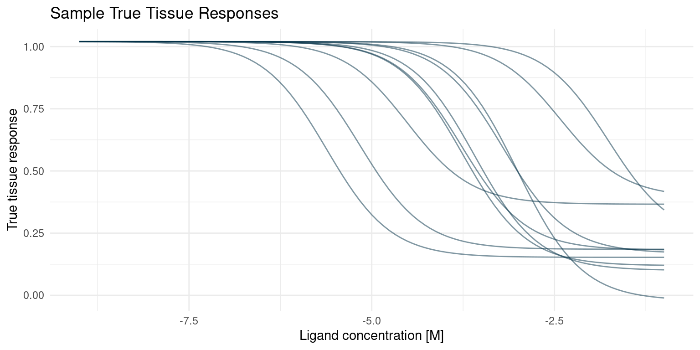
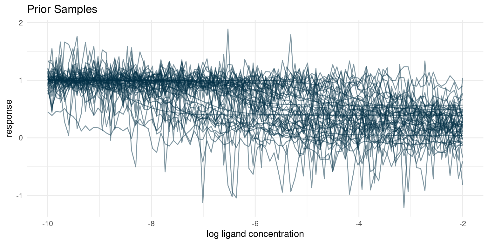
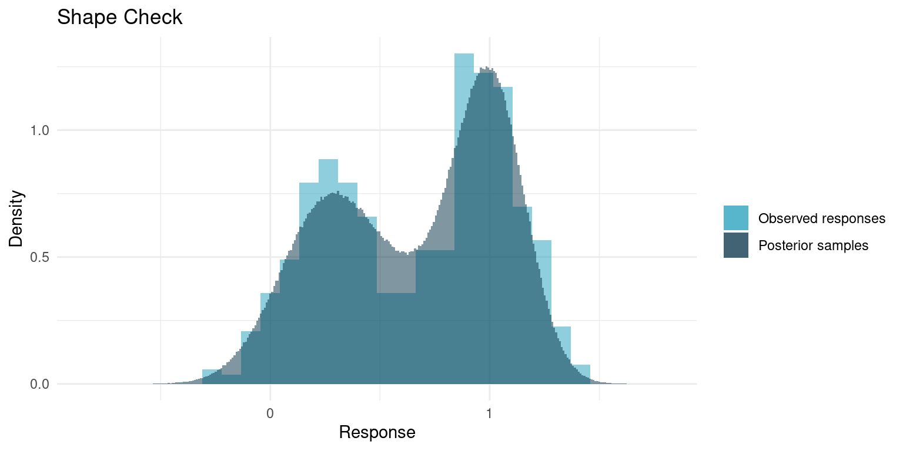
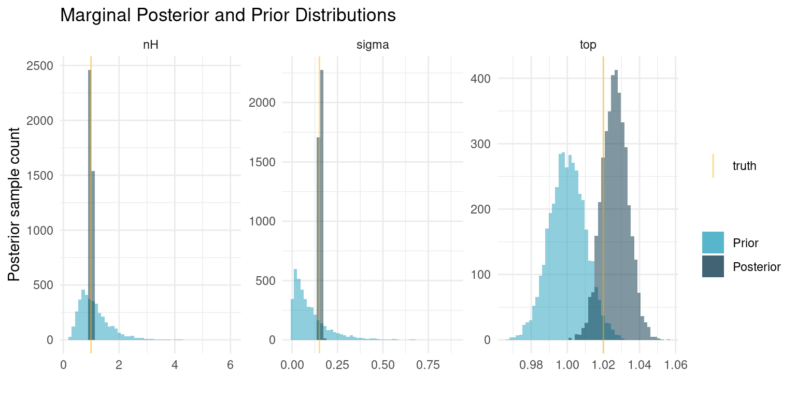
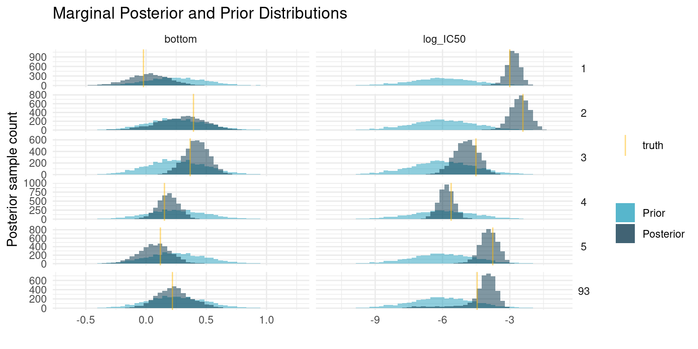
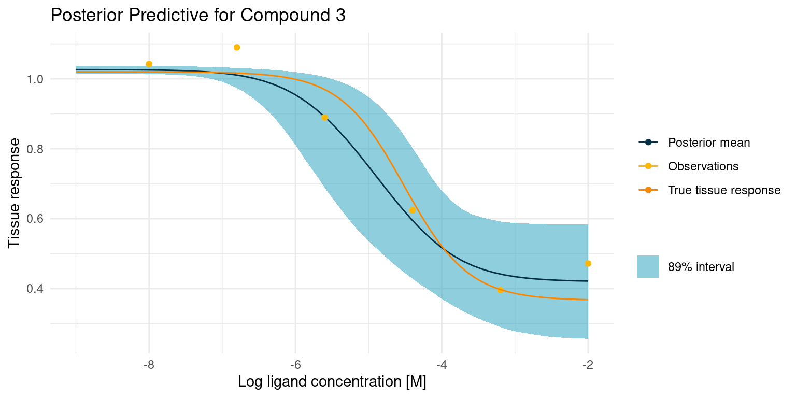
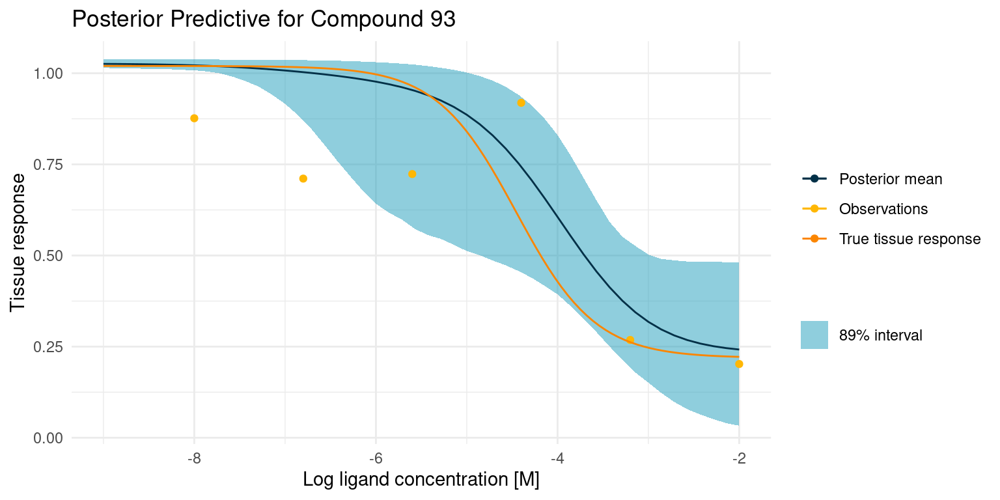
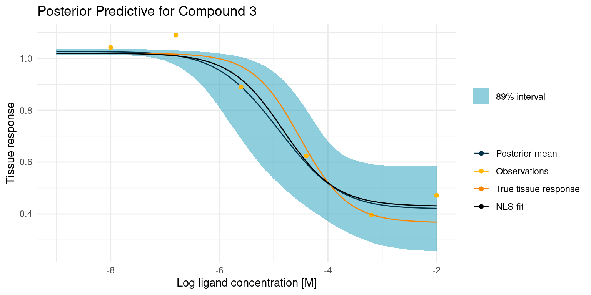
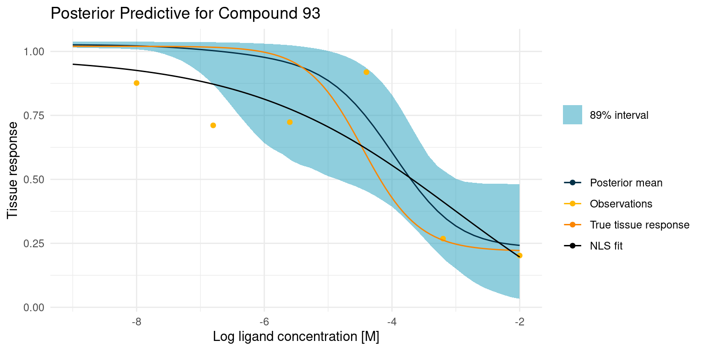

Bespoke Bayesian Model for High Throughput Biochemical Assays
I am on a quest to improve the model fitting I do on biochemical assays. For some time, I have had this feeling that I should be able to extract more information from the data gathered in biochemical assays, in particular assays with a high throughput.
In two previous studies we built bespoke Bayesian models to fit observations from a biochemical assay with kinetics that could be represented by the Hill equation. In those studies, we fit a single curves one at a time. In this study, we extend the model to capture the additional information available when screening a large number of compounds in parallel.
We start by setting a seed and some nice colours for plotting.
library(ggplot2)
library(magrittr)
colour <- list(
orange_dark = "#fb8500",
orange_light = "#ffb703",
blue_dark = "#023047",
azure = "#219ebc",
blue_light = "#8ecae6"
)
set.seed(4444)High Troughput Biochemical Experiments
With Bayesian models, we can take advantage of our domain expertise to produce clear answers to our scientific hypotheses and to quantify uncertainty in data and hypotheses. It does, however, require that we are able to represent our expertise as probabilistic models. So before we dive into the Bayesian engine, let’s discuss our biochemistry knowledge and the data we might get from a high throughput experiment.
We are considering compounds that are potential ligands to receptors and cause a tissue response according to the Hill equation
\[\mu_{ij} = top - \frac{bottom_j - top}{1 + 10^{(\log_{10}(IC_{50,j}) - \log_{10}([A_i]))^{n_H}}}\]
Where \(\mu_{ij}\) is the tissue response of the \(j\)’th compound at concentration \([A_i]\).
The equation looks slightly different from the previous studies because we now have multiple compounds in a screening study. The equation also encodes a few assumptions about such an assay. First of all, we are assuming that the tissue response in the absence of ligand, \(top\), is the same for all tested compounds. Similarly, we are assuming that the kinetics of the tissue response, as represented by the Hill number, \(n_H\), stays the same for all compounds. For the maximum tissue response, \(bottom_j\), and the concentration at half response, \(\log_{10}(IC_{50,j})\), however, we are assuming that each compound has its own parameter.
These assumptions might not hold true for every experiment, but if we imagine that we are screening compounds for a good drug candidate and we are looking at the same tissue response for each of them, these assumptions should hold.
As in previous studies, I opt for synthetic data. This has two advantages; we are forced to consider the underlying process that generates our experiment data and, after we have applied a model, we can compare the output to our known truth. We can code the first part of the generative process with a simple function
hill_function <- function(log_conc, bottom, top, log_IC50, nH) {
top + (bottom - top)/(1 + 10^((log_IC50 - log_conc)*nH))
}Now, our observations are not perfect and will be subject to some noise. For this study, we are going to assume that all observations were made in the same batch, under the same conditions, and at the same time such that they have identically distributed noise. Specifically, we will give the observations some Gaussian noise.
assay_response <- function(log_conc, bottom, top, log_IC50, nH, sigma) {
noise <- rnorm(length(log_conc), 0, sigma)
hill_function(log_conc, bottom, top, log_IC50, nH) + noise
}Next we should consider what type of screening we are doing. There are a couple of different options. We could screen a lot of random compounds for activity. While this is a common scenario, it is not too interesting to model, as we expect that the vast majority of tested compounds will have no activity. In this study, as in the previous, we instead imagine the case where we produce a large number of variations on an endogenous ligand, in the hopes that we stumble upon something with more desirable properties like higher potency.
So we produce 100 modifications to an endogenous ligand which has known parameters \(\log_{10}(IC_{50}) = -7.2\) and \(bottom = 0\). We expect that the modifications might cause us to lose potency, i.e. increase \(\log_{10}(IC_{50})\), and efficacy, i.e. increase \(bottom\), most of the time. To add a little extra challenge, I am adding compounds that have extremely low \(\log_{10}(IC_{50})\) corresponding to the case where our modification almost or completely removes potency.
With this, we have the final part of the generative model:
n_compounds <- 100
true_parameters <- tibble::tibble(
compound = seq(1, n_compounds),
bottom = 1 - rlnorm(n_compounds, -0.25, 0.125),
log_IC50 = rnorm(n_compounds, -5, 1.5) + rexp(n_compounds, 3),
top = 1.02,
nH = 0.99,
sigma = 0.15
)With the generative model in place, we can draw a few of the true curves that we will sample from and estimate in our hypothetical screening experiment.
true_curves <- purrr::pmap(
true_parameters,
~ geom_function(
fun = hill_function,
args = list(
top = ..4,
bottom = ..2,
nH = ..5,
log_IC50 = ..3
),
colour = colour$blue_dark,
alpha = 0.5
)
)
p <- ggplot() +
xlim(-9, -1) +
theme_minimal() +
labs(
x = "Ligand concentration [M]",
y = "True tissue response",
title = "Sample True Tissue Responses"
)
Reduce(`+`, true_curves[1:10], init = p)
Bespoke Bayesian Model
Now that we understand the generative process and we have some data, we can start considering a Bayesian model. We need to specify two things; a set of relations that describe the generative process and priors for any parameters. If this seems similar to what we just did in the previous section, it is because it is. The Baysian model should reflect the process that generated the data. So let’s get started.
Likelihood Model
In our screening assay, we will consider \(M\) compounds \(j = 1, ..., M\). For each compound, we measure an assay response, \(y_{ij}\), for a number, \(i = 1, ..., N\), of ligand concentrations \([A_{ij}]\). We also know that the assay response averages to the tissue response, \(\mu_{ij}\), but that observations are noisy:
\[y_{ij} \sim {\sf Normal}(\mu_{ij}, \sigma)\]
Note that the noise parameter, \(\sigma\), is the same for all \(M\) compounds.
The tissue response is a deterministic function of four kinetic parameters, as described by the Hill equation:
\[\mu_{ij} = top - \frac{bottom_j - top}{1 + 10^{(\log_{10}(IC_{50,j}) - \log_{10}([A_{ij}]))^{n_H}}}\]
Priors
For the minimum response parameter, \(top\), we will specify a narrow prior, as we have no indication that it should be anything other than 1.
\[top \sim {\sf Normal}(1, 0.01)\]
In a real scenario the Hill number, \(n_H\), will probably be well know before high throughput screening experiments are done. For the purpose of demonstration, however, we will give it a relatively wide prior and hope to learn the true number from our data, in this case.
\[n_H \sim {\sf LogNormal}(0, 0.5)\]
For sigma \(\sigma\), we put a prior that corresponds to a mean standard deviation that is 10% of the assay window. We also want very high noise to be very unlikely.
\[\sigma \sim {\sf Exp}(10)\]
We now have multiple \(bottom_i\) parameters to consider.
We know that the most likely scenario is where our modification causes the ligand to lose efficacy yielding a minimum tissue response somewhere between 0 and 1. However, there is a small chance that our superior design yields a ligand that is more efficacious than the endogenous ligand and thus has a minimum response below 0. Our prior for the \(bottom\) parameter should thus be concentrated between 0 and 1 but with some probability below 0. Let’s try a normal prior.
The question that remains is whether this argument is true for all \(bottom_i\). We are going to assume that it is and use the same prior for all \(bottom_i\).
\[bottom_i \sim {\sf Normal}(0.25, 0.25)\]
The modified ligand is likely to lose potency, i.e. have a higher \(\log_{10}(IC_{50,i})\), compared to the endogenous ligand which has \(\log_{10}(IC_{50,i}) = -7.2\), but we might get lucky and see an increase. This is not much to go on, but it should still allow us to use a somewhat narrow prior. Again, we will use the same prior for all \(\log_{10}(IC_{50,i})\).
We added a bit of an extra challenge, allowing for some compounds to have very high \(\log_{10}(IC_{50,i})\). For now, we are going to pretend that we do not have that knowledge and see what this prior will do for us. In a real world scenario, we never know the true distributions. The best priors arise by applying our scientific experience and logic.
\[\log_{10}(IC_{50}) \sim {\sf Normal}(-6, 1.5)\]
Prior Predictive Simulation
With the model and priors in place, we should control the sensibility of them with a prior predictive check. So let’s imagine that we perform the screening experiment, sampling the underlying parameters from our prior distributions, and have a look at the hypothetical observations that would arise.
Let’s go ahead and define a function for sampling our priors and simulating a screening experiment.
prior_parameters <- function(n_compounds = NULL,
bottom_mean = NULL,
bottom_sd = NULL,
top_mean = NULL,
top_sd = NULL,
log_IC50_mean = NULL,
log_IC50_sd = NULL,
nH_meanlog = NULL,
nH_sdlog = NULL,
sigma_rate = NULL) {
tibble::tibble(
compound = seq(1, n_compounds),
bottom = rnorm(n_compounds, bottom_mean, bottom_sd),
log_IC50 = rnorm(n_compounds, log_IC50_mean, log_IC50_sd),
top = rnorm(1, top_mean, top_sd),
nH = rlnorm(1, nH_meanlog, nH_sdlog),
sigma = rexp(1, sigma_rate)
)
}
screening_experiment <- function(parameters, log_conc) {
parameters %>%
tidyr::expand_grid(log_conc = log_conc) %>%
dplyr::mutate(
response = assay_response(log_conc, bottom, top, log_IC50, nH, sigma)
)
}Now we can do our prior predictive check by performing a hypothetical experiment with our priors
priors <- list(
bottom_mean <- 0.25,
bottom_sd <- 0.25,
top_mean <- 1,
top_sd <- 0.01,
log_IC50_mean <- -6,
log_IC50_sd <- 1.5,
nH_meanlog <- 0,
nH_sdlog <- 0.5,
sigma_rate <- 10
)
replicate(
10,
rlang::exec(
prior_parameters,
n_compounds = 5,
!!!priors
),
simplify = FALSE
) %>%
dplyr::bind_rows(.id = "rep") %>%
dplyr::mutate(rep = paste0(rep, "-", compound)) %>%
screening_experiment(log_conc = seq(-10, -2, length.out = 100)) %>%
ggplot(aes(x = log_conc, y = response, group = rep)) +
geom_line(colour = colour$blue_dark, alpha = 0.5) +
theme_minimal() +
labs(
x = "log ligand concentration",
y = "response",
title = "Prior Samples"
)
Our prior understanding of the data generating process predicts a diverse set of curves. One of the things that often surprises me is the large number of seeming outliers, even with conservative estimates for noise. Given variance and enough samples, we are bound to see some weird behaviour.
I think that these hypothetical samples seem like a fair representation of the samples I expect to get from the assay. If for some reason we thought that the hypothetical samples looked too extreme or did not represent the full range of possible observations, we would have to go back and adjust our priors.
Bayesian Model
Now it is time for the fun part. First we implement the complete Bayesian model, consisting of our observational model and prior distributions, in Stan.
The trick here is to define an index variable that keeps track of parameters for individual curves.
writeLines(readLines("hill_equation_screening.stan"))data {
int<lower=0> N;
int<lower=0> M;
int<lower=0> curve_ind[N];
vector[N] log_conc;
vector[N] y;
}
parameters {
real top;
vector<upper=top>[M] bottom;
vector[M] log_IC50;
real<lower=0> nH;
real<lower=0> sigma;
}
model {
vector[N] mu;
bottom ~ normal(0.25, 0.25);
top ~ normal(1, 0.01);
log_IC50 ~ normal(-6, 1.5);
nH ~ normal(1, 0.01);
sigma ~ exponential(10);
for ( i in 1:N ) {
mu[i] = top + (bottom[curve_ind[i]] - top)
/ (1 + 10^((log_IC50[curve_ind[i]] - log_conc[i])*nH));
}
y ~ normal(mu, sigma);
}
generated quantities {
vector[N] mu;
vector[N] y_sampled;
for ( i in 1:N ) {
mu[i] = top + (bottom[curve_ind[i]] - top)
/ (1 + 10^((log_IC50[curve_ind[i]] - log_conc[i])*nH));
y_sampled[i] = normal_rng(mu[i], sigma);
}
}Conditioning
Next we need some data to condition our model on. So we perform a simulated screening experiment using our true parameters. Recall that we have 100 compounds. In the screening experiment we will sample the tissue response for each compound at 6 different concentrations.
assay_window <- seq(-8, -2, length.out = 6)
observations <- screening_experiment(
parameters = true_parameters,
log_conc = assay_window
)
data <- list(
N = nrow(observations),
M = max(observations$compound),
curve_ind = observations$compound,
log_conc = observations$log_conc,
y = observations$response
)
post <- rstan::stan_model("hill_equation_screening.stan") %>%
rstan::sampling(
data = data,
chains = 4,
cores = 4,
seed = 4444
)
# Extract samples from the posterior distribution
posterior_samples <- rstan::extract(post) %>% tibble::as_tibble()Examining the Posterior
Before applying the model, we should do some quality assurance. Since we have simulated data, we can of course compare the posterior distributions to our known truth, and we will definitely do that, in a moment. In real problems, however, the truth is not known and we have to rely on other approaches.
Here I have three approaches that rely only on the model and the data. None of the approaches will tell us whether the model is a good one, but they will often indicate any problems.
Quality of the Monte Carlo Simulation
The first thing we can do is do a quality check of the Monte Carlo sampling. Stan usually complains when something seems wrong, but we can also check some specific diagnostics.
I often get divergent transitions when I build multilevel models and they are a signal that there are areas of the model space that are difficult to traverse. Often they can be fixed by increasing the adapt_delta parameter like we did in a previous study. When that does not work, it is a sign that maybe the model needs to be re-parametrised. For our model in this study, we should not have that problem, though.
rstan::check_divergences(post)0 of 4000 iterations ended with a divergence.When Stan complains about maximum tree depth it is because the Monte Carlo sampler was unable to fully explore some parts of the model space. It is really only an efficiency metric, but a common piece of advise when experiencing tree depth warnings is to use narrower priors. I also often find that I see this warning when I have forgotten to put an explicit prior on a parameter. In this case, we have put a lot of thought into our priors and they should be good.
rstan::check_treedepth(post)0 of 4000 iterations saturated the maximum tree depth of 10.Convergence
We should also check check whether each of our parameters have properly converged. Stan provides two metrics for us to review. \(\hat{R}\) is a measure of convergence and when \(\hat{R} > 1.01\) it is an indication that the posterior samples aren’t quite representative of the true posterior distribution.
\(n\_eff\) is an estimate of the number of true samples our chains represent. If the number of effective samples is low compared to the number of samples we chose to take after warm up, it indicates that it was difficult for the Monte Carlo sampler to figure out that parameter in the grand scheme of things. Sometimes it helps to increase adapt_delta and do more warm-up samples, but I find that it is also often indicative of data that is very incompatible with the model and its priors. In this study, we ran four chains with 1000 samples after warm-up, so we would like to see at least several hundred effective samples.
Let’s just have a look at the parameters that proved to be most difficult.
post_summaries <- rstan::summary(
post,
pars = c("bottom", "log_IC50"),
probs = NULL
)$summary
tibble::as_tibble(post_summaries) %>%
dplyr::select(-c(mean, se_mean, sd)) %>%
dplyr::mutate(parameter = rownames(post_summaries), .before = 1) %>%
dplyr::mutate(dplyr::across(-parameter, round, digits = 3)) %>%
dplyr::arrange(desc(Rhat)) %>%
dplyr::slice_head(n = 10) %>%
knitr::kable()| parameter | n_eff | Rhat |
|---|---|---|
| log_IC50[83] | 1177.101 | 1.003 |
| bottom[2] | 4258.387 | 1.002 |
| log_IC50[2] | 4483.525 | 1.002 |
| log_IC50[37] | 1349.972 | 1.002 |
| log_IC50[71] | 2269.627 | 1.002 |
| bottom[26] | 3953.336 | 1.001 |
| bottom[32] | 6086.841 | 1.001 |
| bottom[37] | 1252.062 | 1.001 |
| bottom[44] | 4487.325 | 1.001 |
| bottom[71] | 4270.506 | 1.001 |
It looks like our parameters have converged nicely.
Note that some parameters have \(n\_eff\) that are quite a bit below the 4000 samples after warm-up. This is not necessarily a cause for concern, but in case it is very low and we want to use the distribution for predictive purposes, it might be a good idea to increase the number of samples after warm-up a bit.
Data Replication Check
A great sanity check for a model is whether it is able to replicate the data. Our model is fully generative, meaning we can generate hypothetical samples. For a good model, when we generate a number of samples corresponding to the number of data points, the qualitative properties those samples should be similar to those of the original data. Parameters like mean and variance will be very similar, as those are basically the parameters we conditioned on the data, but more qualitative aspects like minimum data point, maximum, or general shape are not a given.
In the Stan script, I included some generated quantities that are essentially sample observations, so we can compare. We will skip comparing maximum and minimum and just compare the overall shape.
ggplot() +
geom_histogram(
data = observations,
mapping = aes(x = response, y = ..density.., fill = "Observed responses"),
bins = 30,
alpha = 0.5
) +
geom_histogram(
data = tibble::tibble(y_sampled = as.vector(posterior_samples$y_sampled)),
mapping = aes(x = y_sampled, y = ..density.., fill = "Posterior samples"),
bins = 300,
alpha = 0.5
) +
theme_minimal() +
scale_fill_manual(values = list(
"Observed responses" = colour$azure,
"Posterior samples" = colour$blue_dark
)) +
labs(
fill = "",
y = "Density",
x = "Response",
title = "Shape Check"
)
It really looks like out model replicates the data quite nicely. Usually the concerns are whether the tails match; if the data has minimum points that are outside what the model yields or if the samples span a much wider range than the data, it might be cause to rethink the model.
Results
Our model and the posterior samples seem to be of decent quality, so let’s put them to use.
Posterior Marginal Distributions
So our model has 203 parameters, 2 for each of the 100 compounds and 3 parameters that are shared between all of them. Let’s see what we have learned about the three shared parameters.
# True parameters of the simulation.
truth <- true_parameters %>%
dplyr::slice_head(n = 1) %>%
tidyr::pivot_longer(
dplyr::everything(),
names_to = "parameter",
values_to = "truth"
)
# A number of draws from our priors to match the number of draws we have from
# the posterior
prior_samples <- replicate(
nrow(posterior_samples),
rlang::exec(
prior_parameters,
n_compounds = 1,
!!!priors
),
simplify = FALSE
) %>%
dplyr::bind_rows() %>%
dplyr::select(top, nH, sigma) %>%
tidyr::pivot_longer(
dplyr::everything(),
names_to = "parameter",
values_to = "sample"
)
# Plot each of the marginal distributions, comparing prior, posterior, and true
# simulation parameters
posterior_samples %>%
dplyr::select(top, nH, sigma) %>%
tidyr::pivot_longer(
dplyr::everything(),
names_to = "parameter",
values_to = "sample"
) %>%
dplyr::left_join(truth, by = "parameter") %>%
ggplot() +
geom_histogram(
data = prior_samples,
mapping = aes(x = sample, fill = "Prior"),
bins = 50,
alpha = 0.5
) +
geom_histogram(aes(x = sample, fill = "Posterior"), bins = 50, alpha = 0.5) +
geom_vline(aes(xintercept = truth, colour = "truth"), alpha = 0.5) +
facet_wrap(~ parameter, scales = "free") +
theme_minimal() +
scale_colour_manual(values = c("truth" = colour$orange_light)) +
scale_fill_manual(values = c(
"Prior" = colour$azure,
"Posterior" = colour$blue_dark
)) +
labs(
y = "Posterior sample count",
x = "",
colour = "",
fill = "",
title = "Marginal Posterior and Prior Distributions"
)
And some summary statistics
post_summaries <- rstan::summary(
post,
pars = c("top", "nH", "sigma"),
probs = c(0.055, 0.5, 0.945)
)$summary
tibble::as_tibble(post_summaries) %>%
dplyr::select(-c(mean, se_mean, sd)) %>%
dplyr::mutate(parameter = rownames(post_summaries), .before = 1) %>%
dplyr::mutate(dplyr::across(-parameter, round, digits = 2)) %>%
knitr::kable()| parameter | 5.5% | 50% | 94.5% | n_eff | Rhat |
|---|---|---|---|---|---|
| top | 1.02 | 1.03 | 1.04 | 4667.23 | 1 |
| nH | 0.99 | 1.00 | 1.02 | 9232.87 | 1 |
| sigma | 0.15 | 0.15 | 0.16 | 2994.32 | 1 |
When we fitted the curve for each individual compound, we ended up with posteriors that were very similar to our priors, indicating that the data was insufficient to provide additional information. In this case, however, we share information about the curve shape, sample noise, and the minimum response among all compounds. The pooling of all that information causes us to get very exact estimates for the curve shape and the sample noise. The estimates are even essentially equal to the truth. For the minimum response, our prior is still very informative compared to the data, so the posterior distribution has barely changed.
These results are quite profound. Even with a relatively wide prior on \(n_H\), corresponding to little knowledge about the kinetics of the response, we were able to estimate those exact kinetics, despite the data being intended for a different purpose. In real problems, we would often be much more sure about that parameter. Similarly, we have a very exact estimate of the experiment noise. If we regularly run such screening experiments this would be a great metric to track over time.
We cannot look at parameters and curves for each of the compounds, so lets just pick a couple, including one that is difficult to fit. As with the shared parameters, we compare the posterior samples to the prior distribution and our known truth.
example_compounds <- c(1:5, 93)
# True parameters of the simulation.
truth <- true_parameters %>%
dplyr::filter(compound %in% example_compounds) %>%
tidyr::pivot_longer(
-compound,
names_to = "parameter",
values_to = "truth"
)
# A number of draws from our priors to match the number of draws we have from
# the posterior
prior_samples <- replicate(
nrow(posterior_samples),
rlang::exec(
prior_parameters,
n_compounds = 1,
!!!priors
),
simplify = FALSE
) %>%
dplyr::bind_rows() %>%
dplyr::select(bottom, log_IC50) %>%
tidyr::pivot_longer(
dplyr::everything(),
names_to = "parameter",
values_to = "sample"
) %>%
tidyr::expand_grid(compound = example_compounds)
# Plot each of the marginal distributions, comparing prior, posterior, and true
# simulation parameters
lapply(example_compounds, function(i) {
tibble::tibble(
bottom = posterior_samples$bottom[,i],
log_IC50 = posterior_samples$log_IC50[,i],
compound = i
)
}) %>%
dplyr::bind_rows() %>%
tidyr::pivot_longer(
-compound,
names_to = "parameter",
values_to = "sample"
) %>%
dplyr::left_join(truth, by = c("parameter", "compound")) %>%
ggplot() +
geom_histogram(
data = prior_samples,
mapping = aes(x = sample, fill = "Prior"),
bins = 50,
alpha = 0.5
) +
geom_histogram(aes(x = sample, fill = "Posterior"), bins = 50, alpha = 0.5) +
geom_vline(aes(xintercept = truth, colour = "truth"), alpha = 0.5) +
facet_grid(rows = vars(compound), cols = vars(parameter), scales = "free") +
theme_minimal() +
theme(strip.text.y = element_text(angle = 0)) +
scale_colour_manual(values = c("truth" = colour$orange_light)) +
scale_fill_manual(values = c(
"Prior" = colour$azure,
"Posterior" = colour$blue_dark
)) +
labs(
y = "Posterior sample count",
x = "",
colour = "",
fill = "",
title = "Marginal Posterior and Prior Distributions"
)
And some summary statistics
post_summaries <- rstan::summary(
post,
pars = c("bottom", "log_IC50"),
probs = c(0.055, 0.5, 0.945)
)$summary
tibble::as_tibble(post_summaries) %>%
dplyr::select(-c(mean, se_mean, sd)) %>%
dplyr::mutate(parameter = rownames(post_summaries), .before = 1) %>%
dplyr::mutate(dplyr::across(-parameter, signif, digits = 4)) %>%
dplyr::filter(stringr::str_detect(
parameter,
paste0("(\\[", example_compounds, "\\])", collapse = "|")
)) %>%
knitr::kable()| parameter | 5.5% | 50% | 94.5% | n_eff | Rhat |
|---|---|---|---|---|---|
| bottom[1] | -0.26640 | 0.02345 | 0.2899 | 6103.0 | 1.0000 |
| bottom[2] | -0.05292 | 0.30550 | 0.5976 | 4258.0 | 1.0020 |
| bottom[3] | 0.25210 | 0.42120 | 0.5831 | 5681.0 | 0.9995 |
| bottom[4] | 0.04298 | 0.18550 | 0.3221 | 6510.0 | 0.9996 |
| bottom[5] | -0.14800 | 0.07444 | 0.2785 | 5360.0 | 1.0000 |
| bottom[93] | 0.01054 | 0.22520 | 0.4813 | 1621.0 | 0.9996 |
| log_IC50[1] | -3.38700 | -2.84400 | -2.3980 | 4842.0 | 1.0000 |
| log_IC50[2] | -3.26300 | -2.54000 | -1.9200 | 4484.0 | 1.0020 |
| log_IC50[3] | -5.83300 | -4.93800 | -4.1330 | 6467.0 | 0.9993 |
| log_IC50[4] | -6.41500 | -5.83600 | -5.2860 | 7889.0 | 0.9995 |
| log_IC50[5] | -4.60200 | -3.93300 | -3.3400 | 5696.0 | 1.0000 |
| log_IC50[93] | -6.41600 | -4.05500 | -3.4590 | 801.6 | 1.0010 |
At first glance, these results may seem unimpressive. Even though the posterior has concentrated compared to our prior, it is still fairly wide. Even the compounds with the narrowest estimate of potency has a 89% interval for \(\log_{10}(IC_{50})\) spanning more than a unit, corresponding to more than an order of magnitude difference in concentration. That is quite a bit.
Seen from another perspective though, we only had six data points to estimate each of those two parameters. If we were extremely confident in the resulting estimates that would be very suspicious. The means of the marginal posterior distributions are close to the truth, so we have good estimates for any downstream analysis, but the relatively wide distributions are there to remind us that our estimate is uncertain.
Posterior Predictive
One way to understand how much, or how little, our model has learned from the data is to visualise the posterior predictions along with the original data. Here is a curve where things went rather well
example_curves <- tibble::tibble(curve = c(3, 93))
example_curves$post_pred <- purrr::map(example_curves$curve, function(i) {
posterior_samples %>%
dplyr::mutate(
log_IC50 = log_IC50[, i],
bottom = bottom[, i]
) %>%
tidyr::expand_grid(log_conc = seq(-2, -9, length.out = 50)) %>%
dplyr::mutate(tissue_response = purrr::pmap_dbl(
list(log_conc, bottom, top, log_IC50, nH),
hill_function
)) %>%
dplyr::group_by(log_conc) %>%
dplyr::summarise(
response_mean = mean(tissue_response),
response_upper = quantile(tissue_response, probs = 0.945),
response_lower = quantile(tissue_response, probs = 0.055)
) %>%
ggplot() +
geom_ribbon(
aes(
x = log_conc,
ymin = response_lower,
ymax = response_upper,
fill = "89% interval"
),
alpha = 0.5
) +
geom_line(aes(x = log_conc, y = response_mean, colour = "Posterior mean")) +
geom_point(
data = dplyr::filter(observations, compound == i),
aes(x = log_conc, y = response, colour = "Observations")
) +
geom_function(
fun = hill_function,
args = true_parameters[i, -c(1,6)],
mapping = aes(colour = "True tissue response")
) +
labs(
y = "Tissue response",
x = "Log ligand concentration [M]",
colour = "",
fill = "",
title = paste("Posterior Predictive for Compound", i)
) +
scale_fill_manual(values = c("89% interval" = colour$azure)) +
theme_minimal()
})
example_curves$post_pred_coloured <- purrr::map(
example_curves$post_pred,
function(p) {
p + scale_colour_manual(values = c(
"Posterior mean" = colour$blue_dark,
"Observations" = colour$orange_light,
"True tissue response" = colour$orange_dark
))
}
)
example_curves$post_pred_coloured[[1]]
Our model is very open about its uncertainty. While the posterior mean is a great compromise between the data points, the model also knows that the assay is noisy, and it has used the pooled estimate of that noise across all curves to give us this nice interval for any point prediction. Not also how the model has confidently ruled out one of the points as an outlier. I think this is a lot of information gained from just a few points of data.
Now let’s have a look at a more difficult case
example_curves$post_pred_coloured[[2]]
This one is difficult because we did not get any good points on the curved part of the tissue response. This makes the estimate for \(\log_{10}(IC_{50})\) very uncertain, resulting in the bulge in the middle. Despite all this, the 89% interval nicely contains the true tissue response.
Model Comparison
Before we wrap up, I want to highlight why I like this approach to modelling my screening assay data in this way by comparing it to a classic model fitting method.
For the comparison, we will use non-linear least squares to directly fit the Hill equation to the data points for a compound. We cannot put flexible priors on the parameters, but we can set constraints that limit the parameters to a range comparable to that of the priors in our Bayesian model.
Again let’s start by looking at the case where things go well.
example_curves$model_comp <- purrr::map2(
example_curves$curve,
example_curves$post_pred,
function(curve, p) {
mod <- nls(
response ~ top + (bottom - top)/(1 + 10^((log_IC50 - log_conc)*nH)),
data = dplyr::filter(observations, compound == curve),
algorithm = "port",
start = list(bottom = 0.25, top = 1, log_IC50 = -6, nH = 1),
lower = list(bottom = -0.3, top = 0.98, log_IC50 = -9, nH = 0),
upper = list(bottom = 1.0, top = 1.02, log_IC50 = -3, nH = 2)
)
p +
geom_function(
fun = hill_function,
args = mod$m$getPars(),
mapping = aes(colour = "NLS fit")
) +
scale_colour_manual(values = c(
"Posterior mean" = colour$blue_dark,
"Observations" = colour$orange_light,
"True tissue response" = colour$orange_dark,
"NLS fit" = "black"
))
}
)
example_curves$model_comp[[1]]
The least squares model is almost identical to our posterior mean estimate and both are close to the truth. This is not altogether surprising, as we had great data points to fit the model curve on. However, only the Bayesian model comes with an estimate of the uncertainty. With the least squares model, we could easily grow overconfident in the fitted parameters.
Let’s have a look at the more difficult case.
example_curves$model_comp[[2]]
In this case, the least squares fit was not really able to find a good foothold in the data, yet it confidently reports the fitted parameters. Granted, our Bayesian model had its troubles too, but at least it reports the extreme uncertainty.
Conclusion
In this study, we built and explored a Bayesian model for understanding large compound screening assays. We showed that we can use our prior knowledge to build a bespoke model and that such a model provides us with more useful information than a conventional least squares model. We experienced that it takes a bit more work to ensure the quality of a Bayesian model, but we tried out a few ways to do so.
Next Steps
In the preceding study, we assumed that the compounds were random perturbations on a known endogenous ligand. We also assumed that the observations arose under similar circumstances such that they shared a common noise parameter. These assumptions may hold in some cases, but often we know more about our data than that.
Maybe the permutations could be described with categories or other labels.
Maybe we performed our screening assay in batches across multiple days, resulting in a possible batch effect on observation data quality.
Either of these cases add another layer of complexity, but batch effects and labels are both things we can handle with a bespoke Bayesian model. These are the subjects of a future study. Stay tuned!
License
The content of this project itself is licensed under the Creative Commons Attribution-ShareAlike 4.0 International license, and the underlying code is licensed under the GNU General Public License v3.0 license.
Anders E. Nielsen
Data Professional & Research Scientist
I apply modern data technology to solve real-world problems. My interests include statistics, machine learning, computational biology, and IoT.